Admin Console
Redesigning every page firm administrators use to run NetDocuments, and proving the new design on real data, without a risky rewrite of the system underneath.
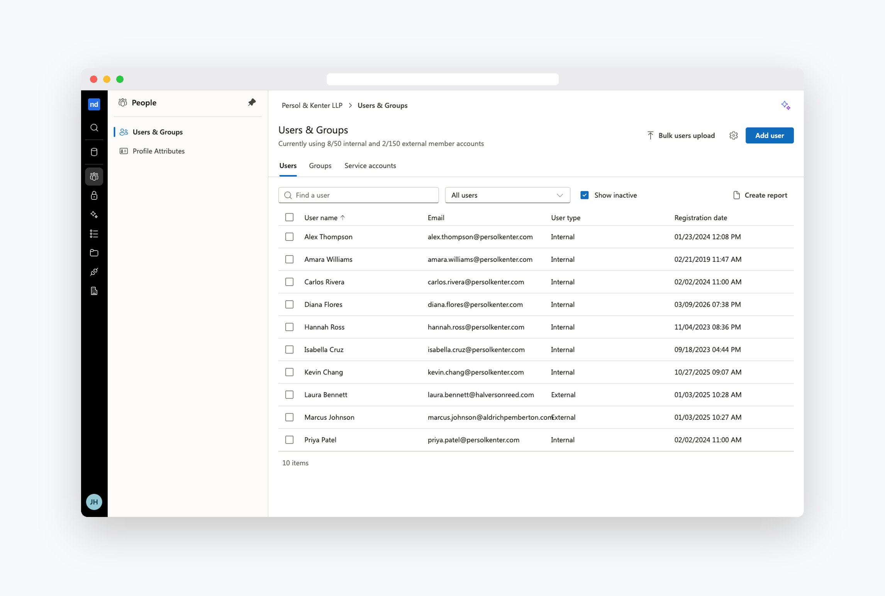
One console,
one set of patterns.
The Admin Console is where a firm's administrators run NetDocuments: users and groups, cabinets, apps, integrations, retention, security settings and AI. It is used less often than the rest of the product, but every page in it controls something a firm cannot afford to get wrong.
The console grew over many years, page by page, in different technologies. I redesigned all of it: 17 pages organized into five page types, new navigation, search, and a repository picker. Then, instead of handing over a file, I built a working version in the product's codebase on real data, so the team could judge the redesign by using it.
Pages redesigned, keeping every field, column and action from the live console
Page types, settings, list, gallery, overview and form, that every page is built from
Commits I made in four days building it on real data, behind a feature flag
A console built
one page at a time.
Pages in the console were built at different times in different technologies. Some are classic server pages, others were rebuilt later. The result is a console where similar jobs look and behave differently from page to page, and where finding a setting depends on remembering where it lives.
The harder problem was underneath. In much of the console, the screens, the business rules and the data access live in the same code. You cannot just put a new front end on it, and a full rewrite would be slow, expensive and risky for the security and compliance settings that live there. So the redesign needed a plan for how it could ship, not just how it should look.
A modernization plan,
then a system, then a build.
I saw the gap while designing the AI pages inside the console, raised it with my manager, and wrote a modernization plan before drawing any screens. I asked engineering which areas were most tangled and which could be restyled without touching the logic, and used that to decide what to build first.
The rule for the design was "same content, new patterns". Every field, column and action from the live console is kept. What changes is the layout, the components and how pages behave, all on the NetDocuments design system. Five decisions shaped it.
Replace it one workflow at a time
Instead of a rewrite, the plan moves one workflow at a time: give it an API, ship the redesigned page on top, and link to the old console for anything not yet rebuilt. Old and new can live side by side, so nothing has to wait for everything.
Five page types for seventeen pages
Every page is a settings page, a list, a gallery, an overview or a form. Each type fixes the width, the body and where the main action goes, so one designer could do 17 pages and they still read as one product.
Save the way the control behaves
Pages made of switches apply each change instantly, with no Save button. Pages with text fields or checkboxes get a single Cancel and Save footer. Two patterns, but each matches what the admin expects from the control in front of them.
Drawer for records, dialog for quick asks
Creating, editing or viewing a record opens a drawer on the right, so the list stays in view. Short forms and confirmations, like adding a user by email, are centered dialogs.
Navigation you can skip
Five categories in the rail open a panel of pages. Search opens any page or sub-page by name from anywhere. The repository picker sits in the rail and the breadcrumb, because admins who manage more than one repository switch often.
Find any setting
in a few keystrokes.
Admin work is mostly "where is that setting again". Search lists every page grouped by category, matches categories as well as names, and reaches sub-pages directly, so typing "dat" finds both Data Loss Prevention and Data Tables.
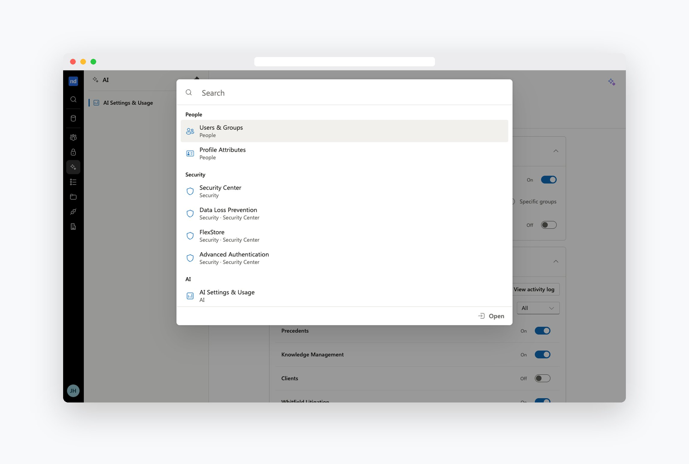
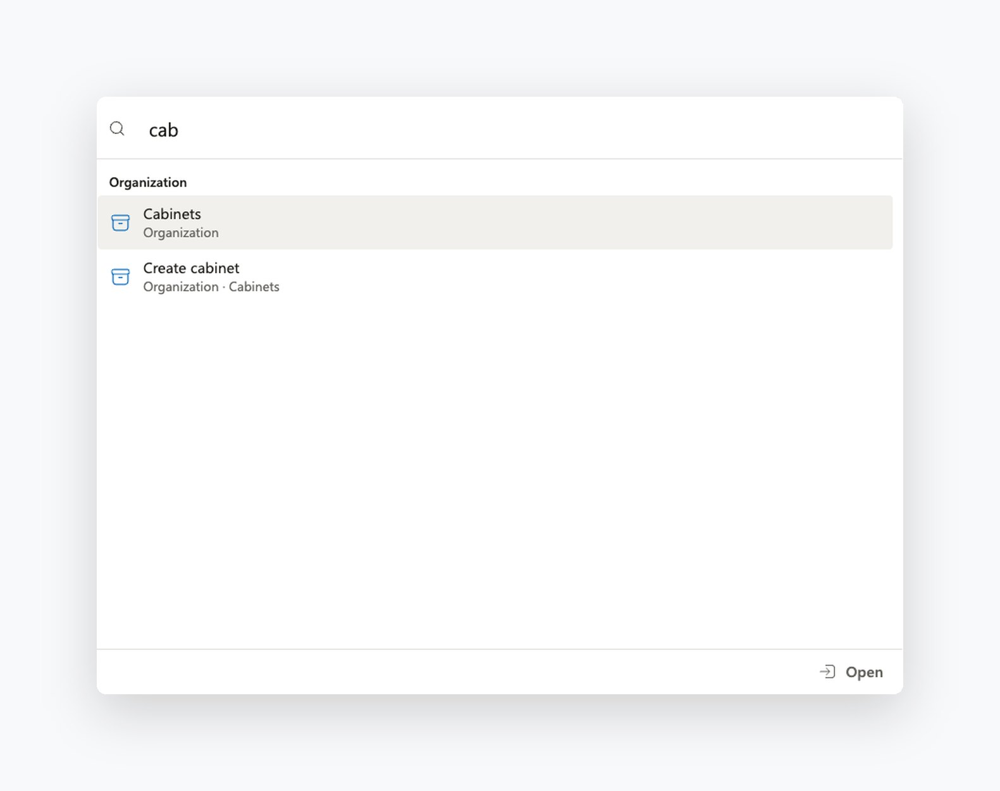
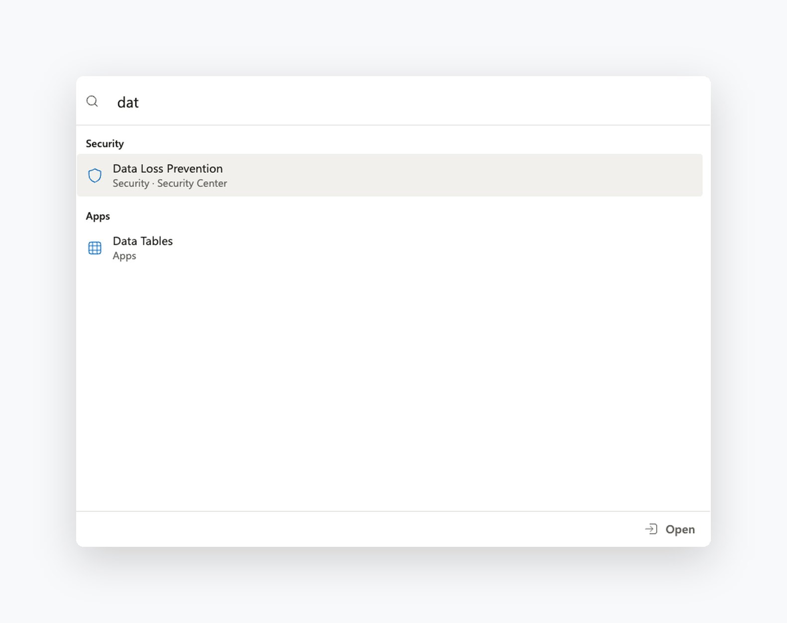
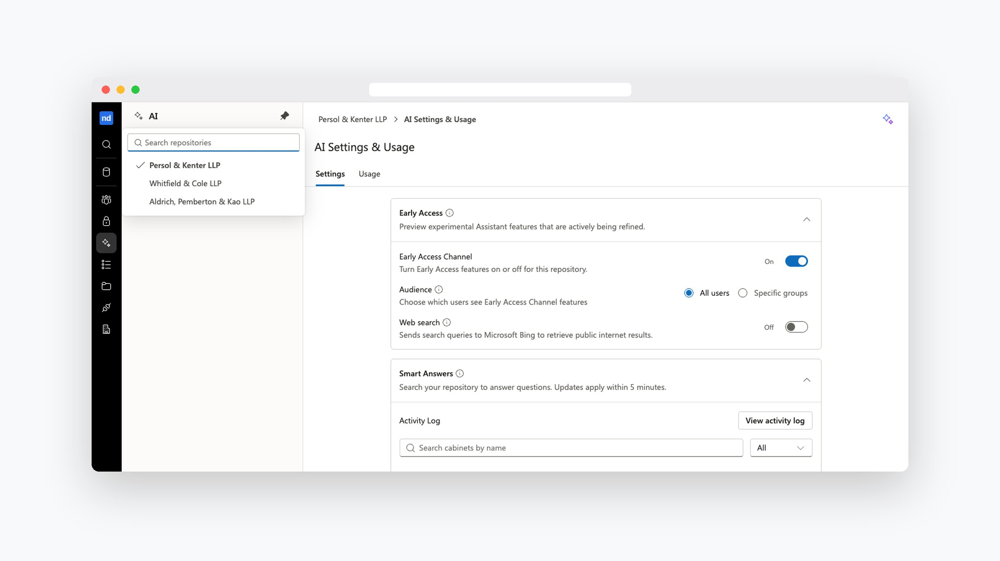
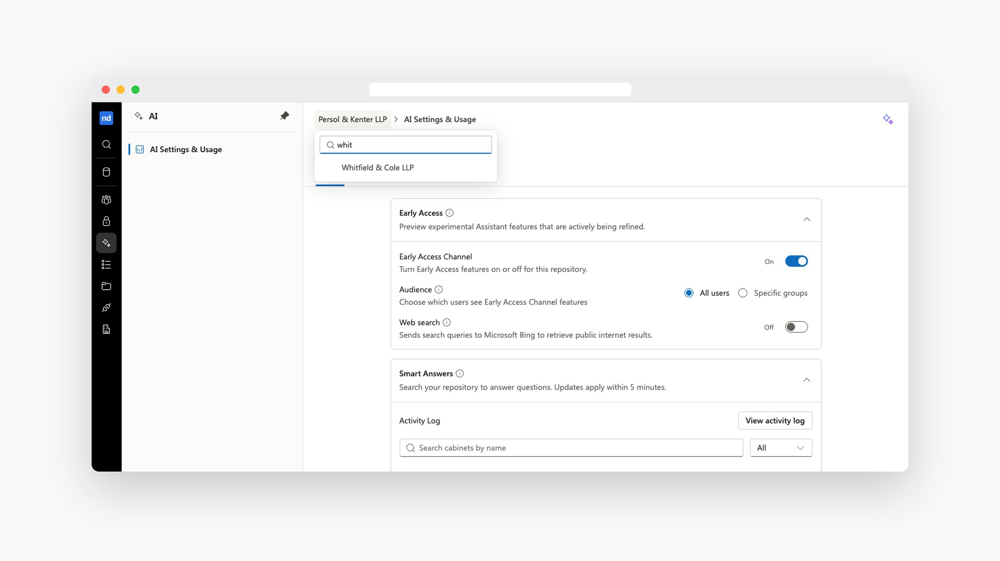
Five page types,
applied everywhere.
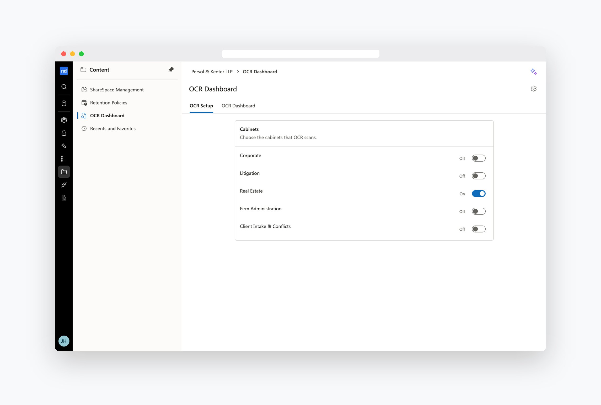
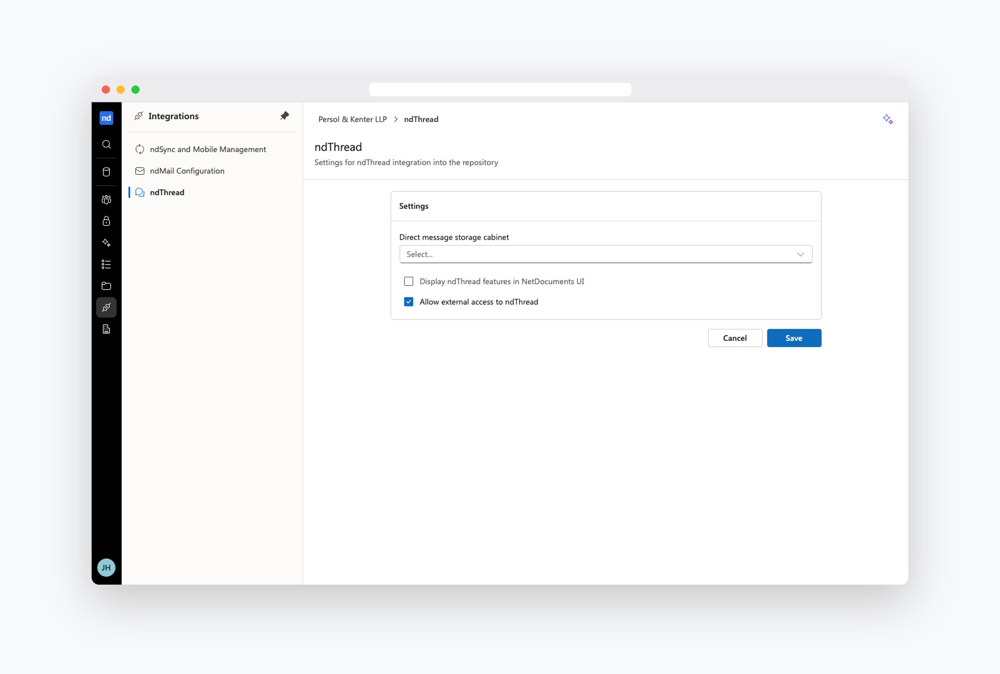
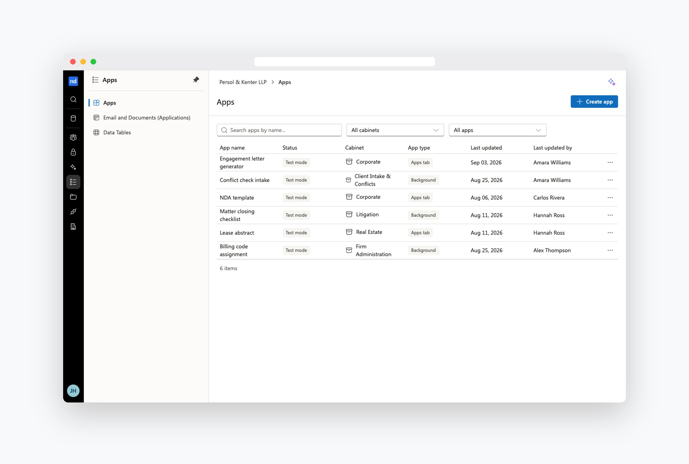
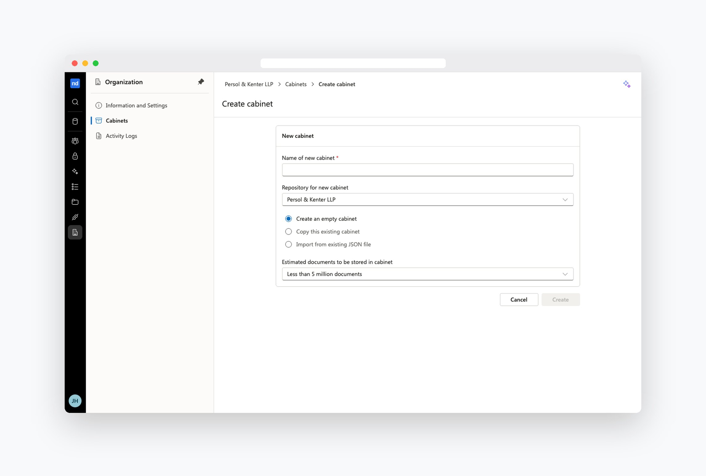
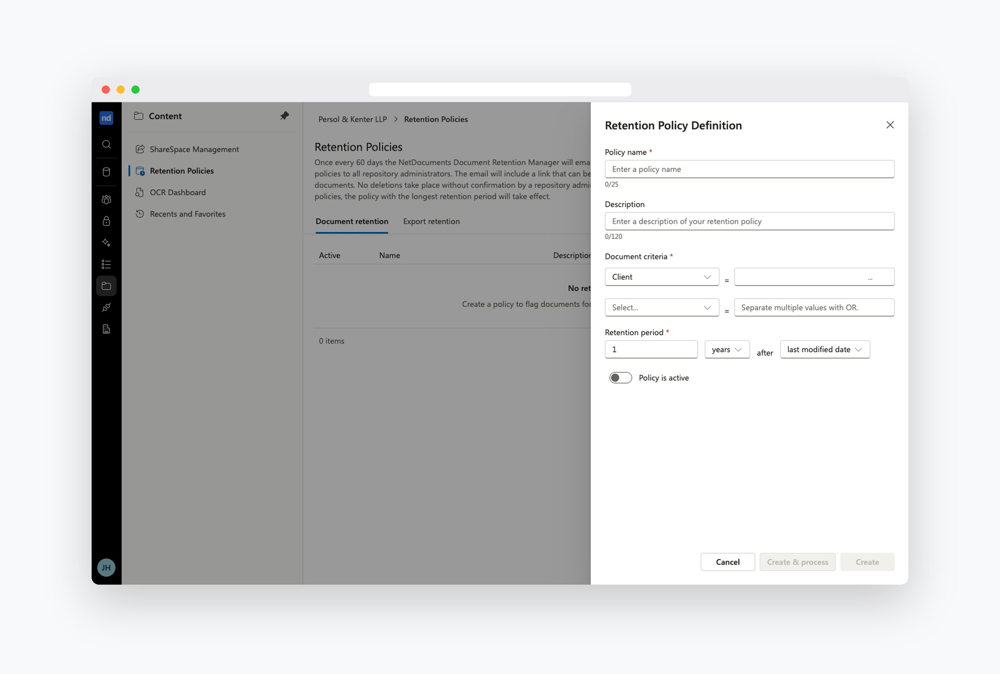
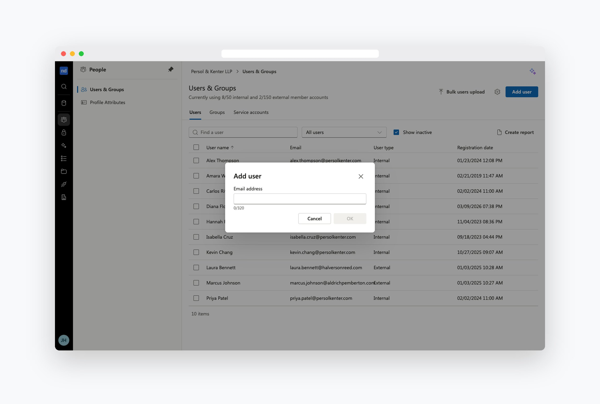
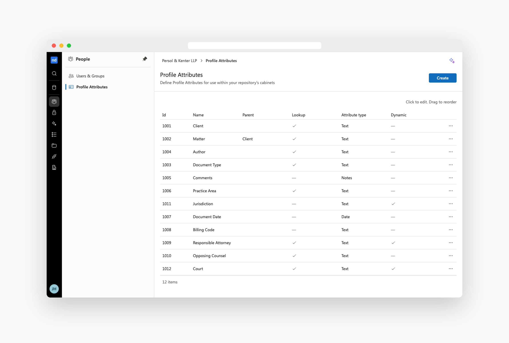
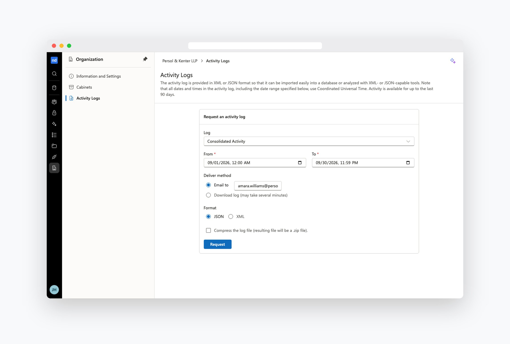
All firms, people and data in these screens are mock data.
From prototype
to working software.
A redesign of a console like this usually stalls at "how would we ever build it". So after the prototype, I built the new shell in the product's codebase: the rail, the category panel and a bridge that shows old pages inside the new frame. Then I rebuilt pages one by one on real data, read-only first, then with saves.
Most pages came across this way. Some depend on old server pages with no API, so they can only be linked to for now. For those, the prototype became the specification for the endpoints another team needs to build. That turned a vague "the console is hard to change" into a specific list: which pages are ready, which are waiting, and what each one needs.
Where it stands.
The new console is a working foundation, not a launched product. It runs on real data behind a feature flag for repository administrators, and I shared it with the team that owns the console as a starting point for the redesign. There are no usage results yet. The plan defines how success would be measured: time to complete key admin tasks, admin-related support tickets, admin satisfaction, and the share of admin traffic on the new pages.
A redesign the team can use, not just view
The design exists as working software on real data, which changes the conversation from "should we" to "what is left".
A system for the next page
Five page types, a saving model and a drawer and dialog rule mean the next page is mostly a decision about which type it is.
A path that does not risk the settings
Replacing one workflow at a time keeps security and compliance settings on proven code until each one has a tested replacement.
The work that is left, made specific
Every page is marked ready, partial or waiting, with the endpoints each one needs, so the remaining work can be planned instead of guessed.